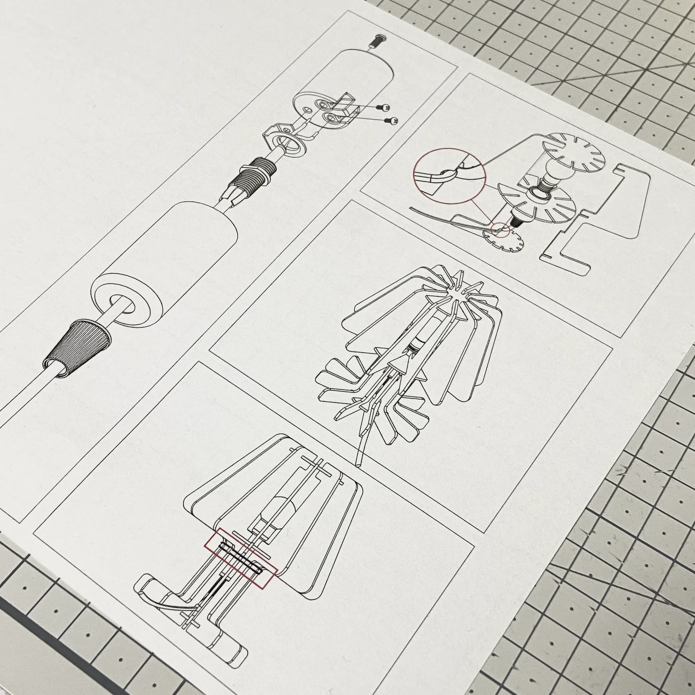
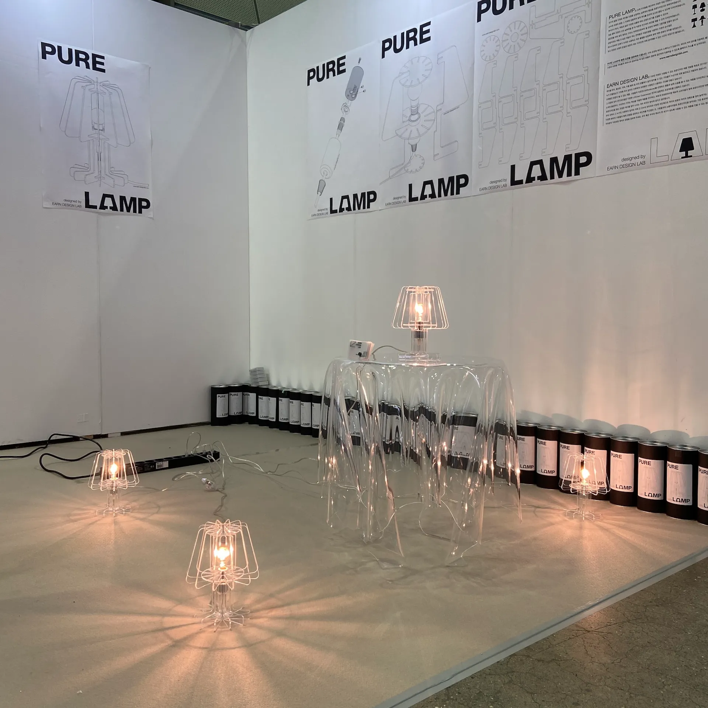
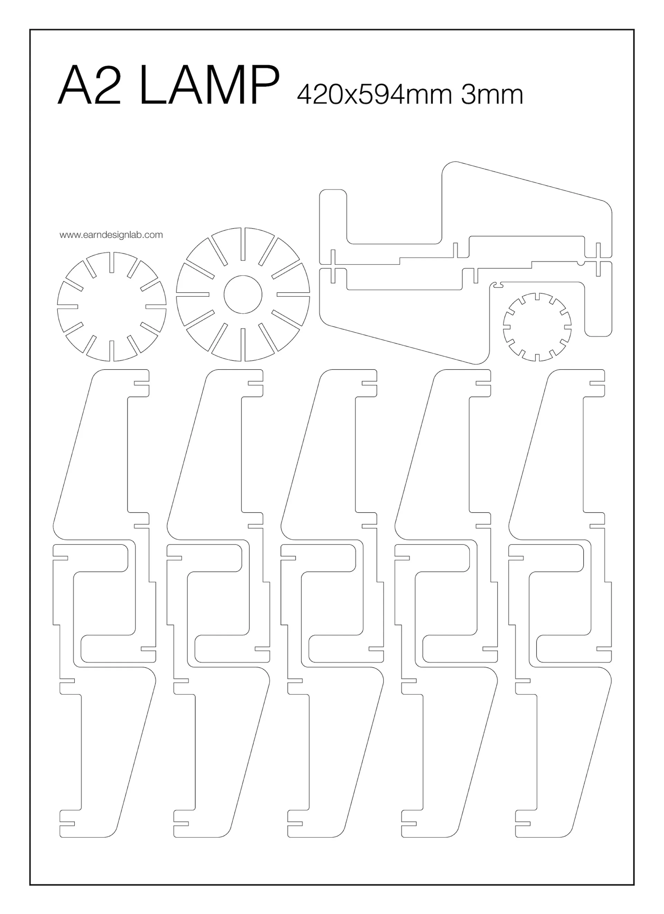
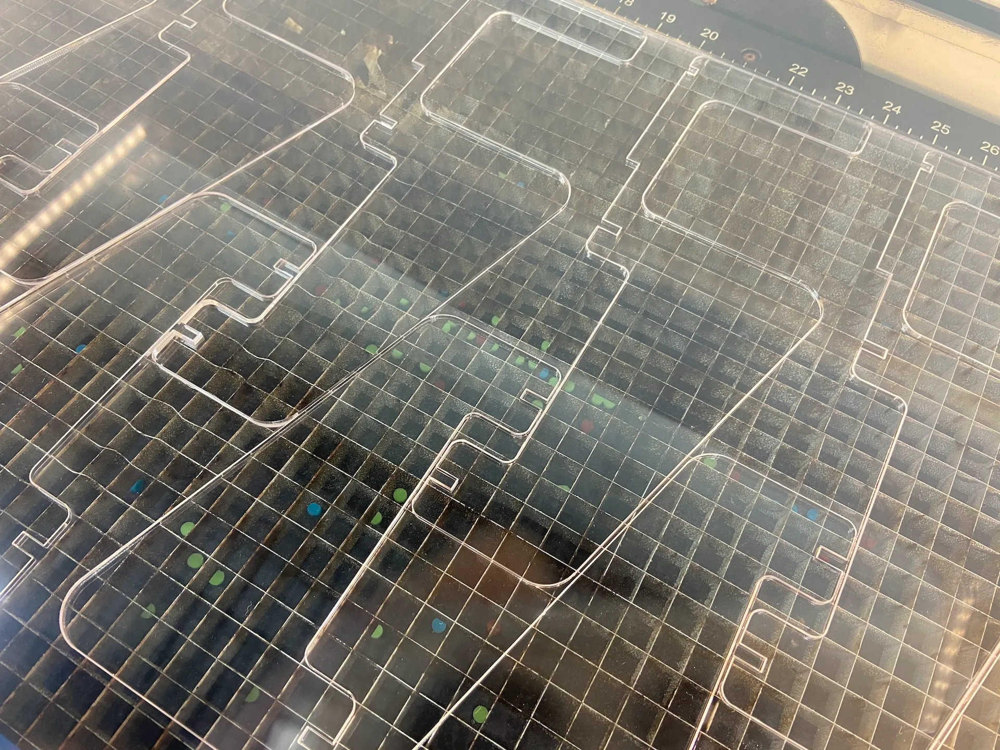
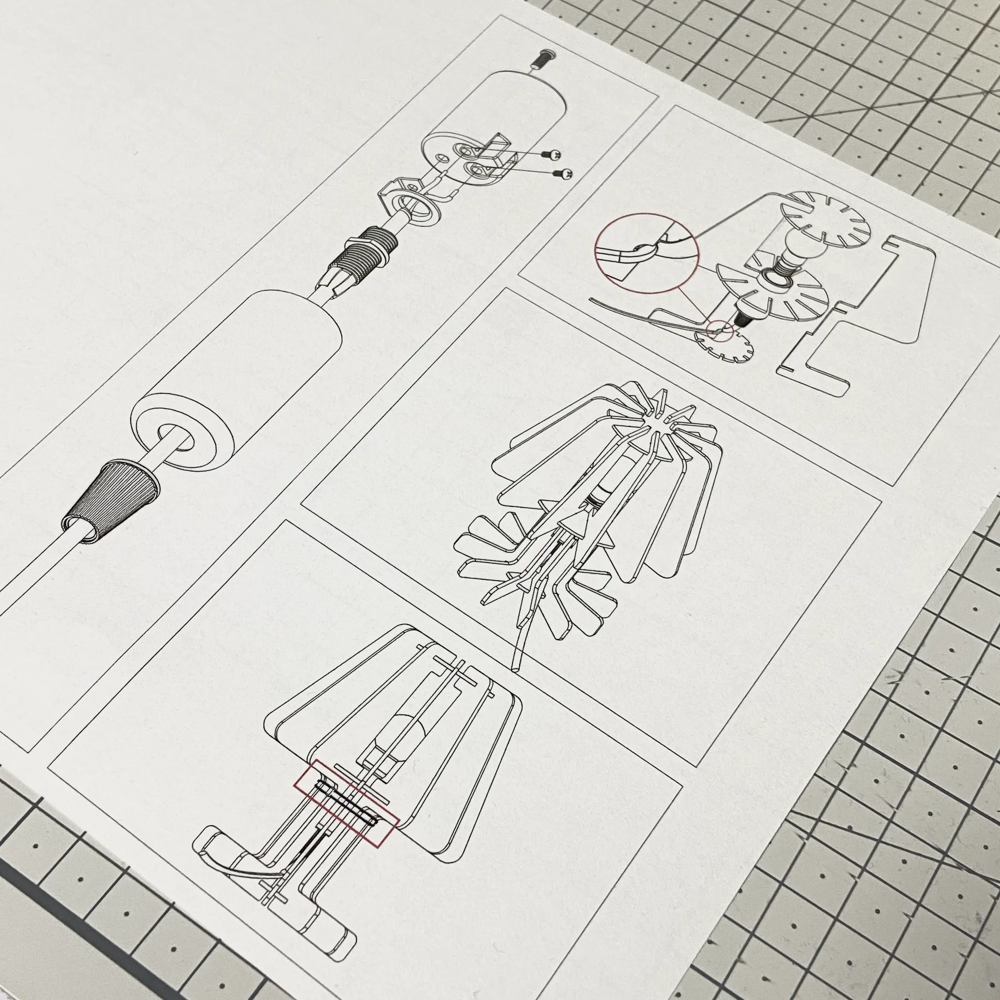
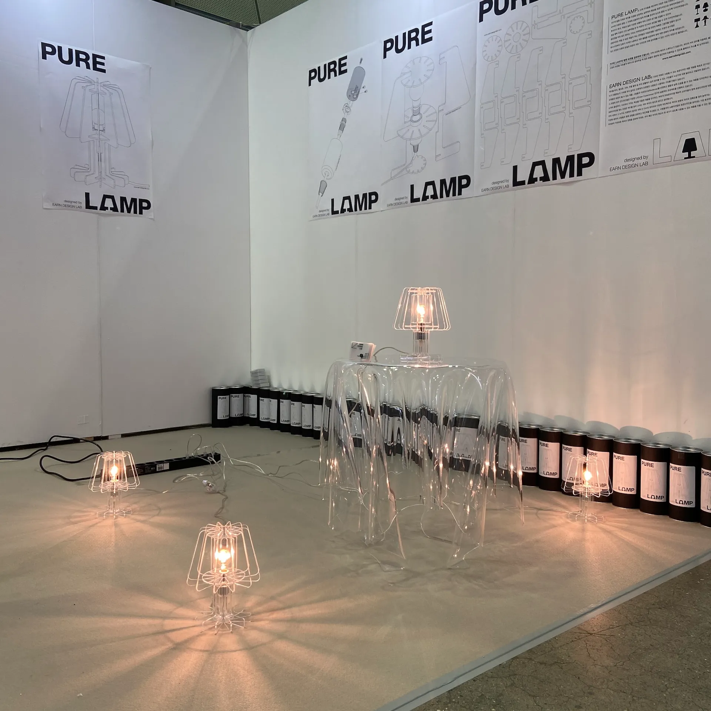
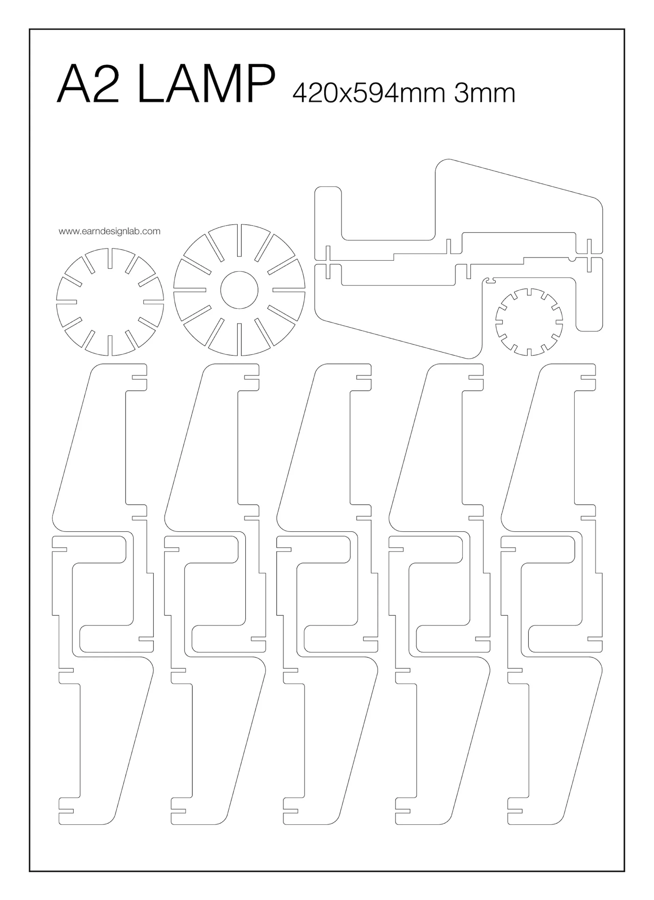
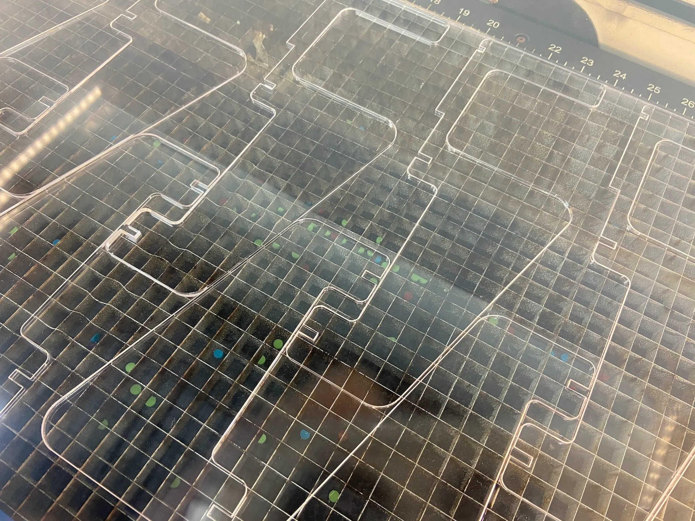

A laser-cut table lamp inspired by a classic lamp shape.
The lamp is designed to be made in a local maker space using any A2 paper-size materials.
The 2D drawing for the lamp is available for free download on the Internet under a Creative Commons (CC) license.
exhibited at 2021 Seoul Design Festival, Seoul, Korea
All 3D files here:
https://cults3d.com/:1063994
 






